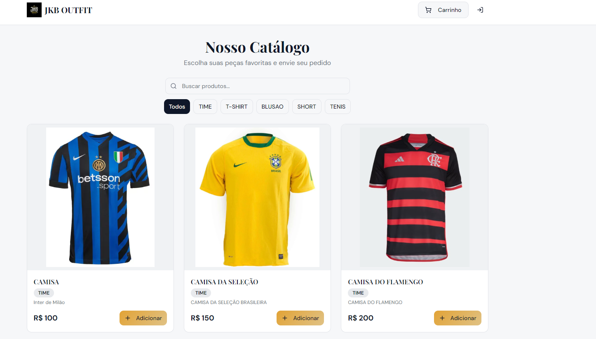
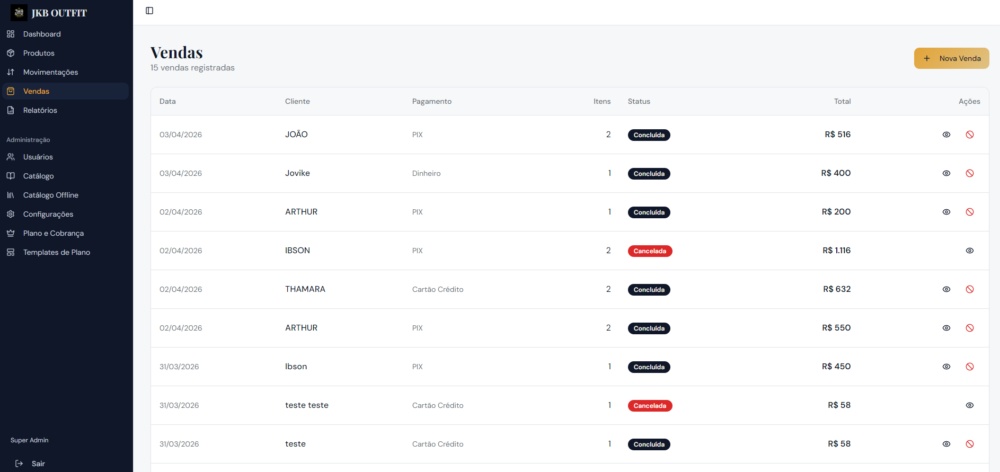
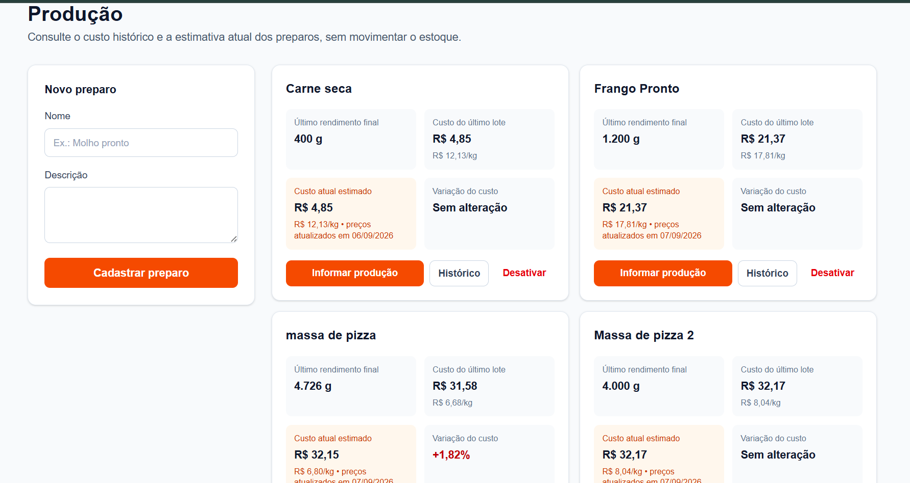
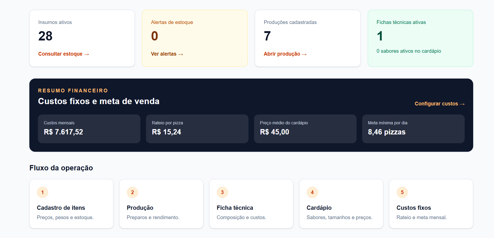
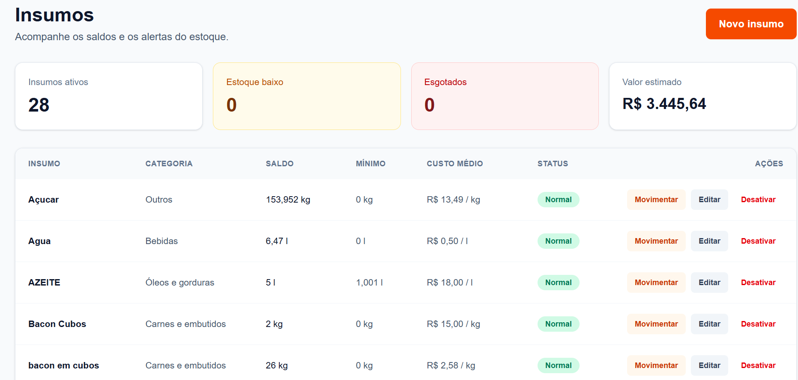

01Sistemas sob medidaDigitalize processos que hoje dependem de papel, planilhas ou controles improvisados.
02Automação de processosReduza tarefas repetitivas, erros de digitação e tempo gasto em atividades operacionais.
04Integração de informaçõesReúna dados de diferentes fontes para construir uma visão confiável da operação.
MineraçãoAutomação da gestão de documentos DesafioAcompanhar documentos, responsáveis e prazos em controles manuais.SoluçãoAmbiente centralizado para visualizar a situação documental da operação.BenefícioMais organização, menos retrabalho e identificação rápida de pendências.
VarejoControle de estoque e vendas DesafioControles separados e dificuldade para acompanhar produtos e vendas.SoluçãoSistema centralizado para cadastro, estoque, movimentações e vendas.BenefícioMais controle da operação, menos erros manuais e acesso rápido às informações. 
fast FoodGestão Inteligente da Produção de Pizzas DesafioFalta de integração entre estoque, produção, CMV e entregas, comprometendo a eficiência da pizzaria.SoluçãoControle estoque, produção, CMV e entregas, reduzindo desperdícios e aumentando a eficiência operacional.BenefícioVisão atualizada e identificação rápida de atrasos, custos e pontos de atenção. 
1Entendemos sua rotinaConversamos com sua equipe e identificamos tarefas manuais, gargalos e oportunidades.
2Desenhamos a soluçãoDefinimos uma solução adequada à operação, às prioridades e ao momento da empresa.
3Implementamos e acompanhamosColocamos a solução em funcionamento, orientamos os usuários e acompanhamos sua evolução.